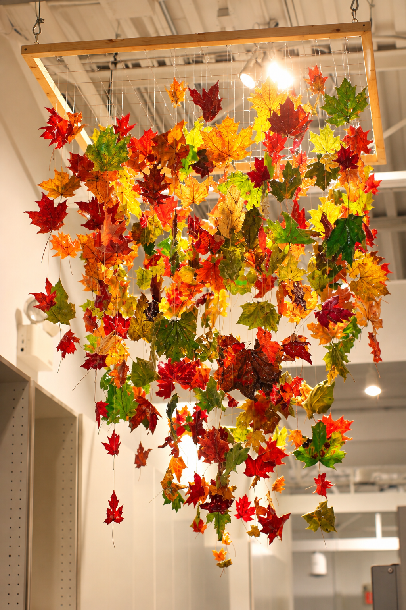
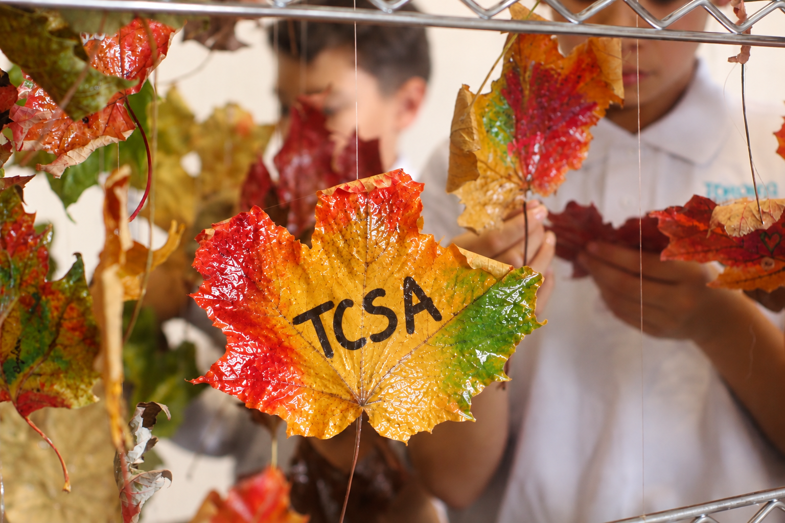

Growing Together, Belonging as One
A Celebration of Family, Identity and School Community
Our ROOTS installation is a collective expression of the families, individuals and relationships that make our school community unique.
Each child was invited to bring leaves representing the members of their family or, in some cases, a single leaf representing themselves. The children carefully coated their leaves with glue to create a lasting shine and added their names using markers, giving each leaf a personal identity.
Suspended from strings within a wooden frame, the leaves come together to form a meaningful representation of our school community. Each leaf is unique in shape, size and character, just as every child and family brings something special to our shared environment.
ROOTS reminds us that although we come from different families and backgrounds, we are connected through belonging, respect and shared experiences.
Together, these individual leaves create something greater than themselves—a beautiful reflection of who we are as a school community, rooted in connection and growing together.
